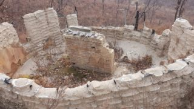
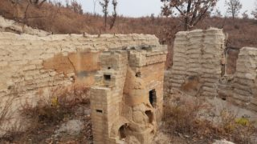
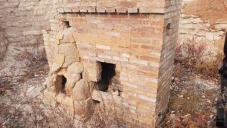

Надёжны ли стены дома из мешков?
Надеюсь, вы прочитали нашу историю и знаете, что наш экодом был уничтожен лесным пожаром. Всё, что осталось - это стены и печь.
С того момента прошло уже три с половиной года, и я был уверен, что стены уже разрушились под воздействием дождей и ветра. Но оказалось, они стоят!
Мы возвели наши стены с некоторым нарушением технологии. По правилам, соотношение глины к песку должно быть в пределах 1 к 2-4 в зависимости от свойств глины. Мы в целях экономии времени использовали грунт без какой либо обработки. В нём соотношение глина/песок было примерно 1/8, и я считал, что это соотношение будет работать, если хорошо защитить его от влаги и ветра крышей и штукатуркой. И практика показала, что в этом я был прав.
Однако, я был уверен, что если оставить такие стены в открытом виде, то они разрушатся в течение максимум 2-3 лет. С удовольствием вынужден признать, что тут я ошибся.
Буквально вчера мне прислали фотографии руин нашего дома в нынешнем их состоянии. Удивительно, но стены стоят в почти неизменном состоянии!
Для сравнения посмотрите на состояние дома сразу после пожара.



Да, верхушки стен изрядно размыты дождями а плоскости сточены эрозией. Но стены-то стоят! Лично для меня это сюрприз. Я был уверен, что сейчас остатки от дома представляют из себя просто кучи грунта. Действительно разрушились только столбики между окнами с правой стороны.
Также удивительно, что печь не разобрана полностью. Кирпичи изъяты только из трубы и второго колпака.
Думаю, эта информация будет полезна тем, кто уже построил или ещё только размышляет о строительстве дома из мешков. Думаю, вопрос о том, надёжна ли эта технология, можно считать закрытым, если даже стены, построенные с её нарушением, не разрушились за 3 года. Укрытые от дождя и ветра крышей и штукатуркой, они могут стоять десятилетиями. Ну а если в этих стенах жить и следить за ними, то веками стоять будут.
Комментарии
Dimonat
Хммм... Неожиданно, но ведь приятно :) . Вы давненько не давали о себе знать... Нечем было поделиться? Обыденность съела всё пространство осознания?
Свобода Изнутри
Почему же сразу обыденность? У нас всегда всё весело и огоньком :)
Ну а писать, когда не горишь темой, считаю неправильно. Вымучивать, высасывать из пальца лишь бы развлечь аудиторию - дело неблагодарное. Вот когда реально будет чем поделиться на тему - обязательно поделимся.
Антон
Возможно пожар укрепил стены. Поэтому и стоят...
Свобода Изнутри
Да, возможно глина глина запеклась и стала лучше сопротивляться воде. Отличная идея для новой технологии экостроительства :)
Александр
Продолжение будет?
Свобода Изнутри
Скорее всего нет.